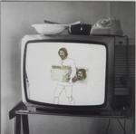

Home Artist links

| Artist: | Epicentro |
| Title: | A Fine D'A Streppegna |
| Label: | self produced |
| Length(s): | 51 minutes |
| Year(s) of release: | 199? |
| Month of review: | 07/2000 |
Line up
Giacomo Ciavatta - guitars, bass, piano fx, vocals
Carmine Vesuvio - drums, percussion, vocals
with help by
Luigi Salerno - contrabasso
Enrica di Martino - vocals
Tracks
| 1) | 'O Buvero | 8.29
|
| 2) | Sarabanda | 4.01
|
| 3) | La Vendemmia Di Euterpe | 3.58
|
| 4) | Per Sole 100000 Lire | 3.17
|
| 5) | L'anagramma Di Giubileo | 5.35
|
| 6) | Linee Libere | 5.59
|
| 7) | Anema, Core E Cazzimma | 7.15
|
| 8) | 'A Streppegna | 2.38
|
| 9) | Pithecusa | 10.09
|
Summary
Seemingly the second disc by Epicentro. Again not available yet, but who knows.
The music
The album opens forcefully with 'O Buvero. At first just a bit of acoustic,
but then the guitars burst loose. Lots of sounds of honking cars in this track
making for a chaotic piece. Then we get a driven part with fast percussion
and a mediterranean melody on guitar. Best played loud. Extremely varied
and fast apced and good to that. Although the variation is as high as it was
on the first album, the song is better at hiding this. The ending is a bit
chaotic though, because of the vocals and the rather neurotic tendency to
let the music start over all the time.
Sarabanda is less than half as long and is something different altogether.
We open with some drumband playing and the sound of the ocean somewhere in
the back. Maybe the Southern of Italy is evoked here. It is audibly recorded
somewhere on a street. This song is simply a collage of a shard of metal music,
a part of a movie, Italians talking and so forth. The acoustic guitar I'd
expected in a track called Sarabande finally comes in La Vendemmia Di Euterpe.
Some angelic tinklings, something softly wailing like a violin, cymbals all
relaxed, but a bit sad and sometimes a bit lighthearted.
Per Sole 100000 Lire opens with rather chaotic percussion. The music turns
out to be more of a play for radio, than a progressive rock album. Again
lots of sound and samples from various places. There's a little music on this
one, but not much. L'Anagramma Di Giubileo means a return to music, but the
sampled vocals continue to be with us. The electric guitar tends to dominate
in melody, but the percussionist has no intention of being snowed under.
The music reminds me in style of late King Crimson, but the melodic material
seems to derive from Italy. Also, the music has some Middle Eastern or
Meditterranean influences. Sometimes the duo arrives at a catchy tune,
but they're hard to spot among the rest of the sound material. Toward the
end there's some more room for some nice guitar riffs.
Linee Libere is mostly percussion at first and of course: plenty of voices.
Then the guitars set in but only for a while and the music is in fact culled
from a previous track. Then a new track seems to start, but the cd player seems
to think differently. Chaos reigns here when the cars start honking again.
After all this experimentation it is good to return to some ordinary music.
We find it in Anema, Core E Cazzimma. Playful percussion, melodic acoustic
guitar and some nice violin(but where from?) in the back. Pastoral.
The voices do come back in, but not as obtrusive. The music is mostly
atmospheric, until a fast paced guitar sets in and the music at times becomes
thunderous. Then the song becomes quite good. 'A Streppegna is a short track
of samples until halfway. Then we get some flashes of quite heavy music. It is
hard to tell whether this is the band or also a sample. Pithecusa closes the
album and is with over 10 minutes the longest track on the album. This is
simply music with the guitar of the previous music tracks. Even some soprano
singing on this one. After taking some to get underway the music gets into
a definite groove with the drummer (who is actually more of a percussionist)
makes the music very driving. A varied track in which the riffs dominate
and the music continues to be interesting. Past halfway we come to a more
relaxed passage with acoustic guitar and bass and some playful additions (some
of the sounds are hard to bring home). The albums ends with solo classical
guitar and of course, somebody talking.
Conclusion
A rather unrestful piece of work, because of all the spoken samples. Less
music on this one, compared to the other album reviewed by me, Senza Scuorna,
Senza Paura. Forgetting about the samples for a while, I think the music
is more coherent, less fragmented and this leads to good results as on
'O Buvero, Anema... and Pithecusa. I do realize that if these tracks would
just follow one another the music would not be varied enugh. For the rest,
it's maybe a nice idea to have all these samples in the music, but they tend
to keep me away from the music, in which I'm first interested.
Innovative? Quite. Appealing? On the whole not so.
© Jurriaan Hage